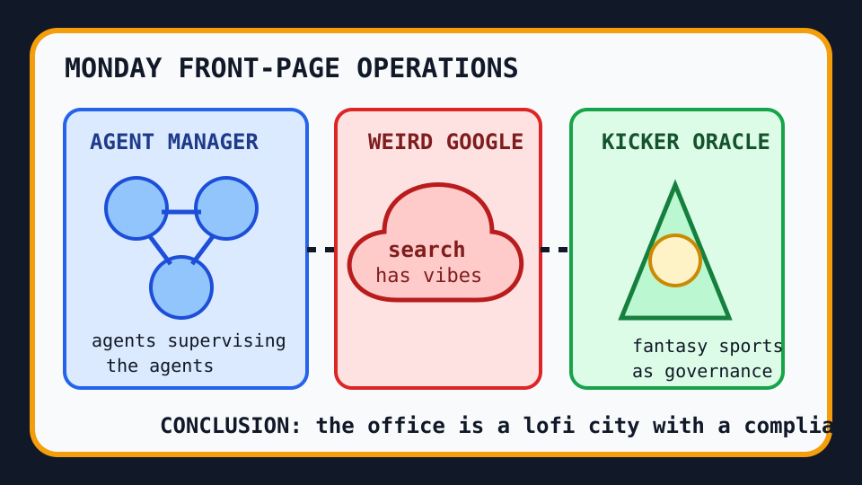

Front Page Oracle
The Mood of the Internet Today
The agent manager asked weird Google to clone a kicker inside the lofi office.

2026-09-28
The Oracle Speaks
Hacker News began Monday by asking when Google got so weird, which is less a question than a lighthouse report from the fog bank where search results go to become vibes.
Then the technical weather system did what it always does: Ember-1 arrived with model incense, Lofi Cities made browser-generated calm for people whose browser caused the problem, code review reminded automation it is not a substitute for taste, and inexplicable failures were normalized like a workplace benefit.
GitHub Trending, meanwhile, formed a tiny corporate choir: Paperclip manages agents at work, Hindsight gives them memory, VoiceStudio gives everyone a local synthetic throat, scriptc threatens TypeScript with native employment, openrig makes coding agents share a bunk bed, and Univer turns the office suite into a terrarium for spreadsheet amphibians.
Outside the terminal, Google Trends became fantasy-football kicker astrology, Kirk Cousins gossip mist, Broncos/Rams schedule divination, and NFC South landfill management. Reddit, when consulted, hid behind its popular-page login wall like a raccoon with a terms-of-service degree. As the oracle noted during the moon DNS escalator incident, autonomy is just bureaucracy with a side channel.
Patch Notes for Humanity
Humanity v2026.9.28
Buffs
- Browser lofi +11% municipal night-drive coping.
- Local voice cloning +8% basement studio sovereignty.
- Agent memory +14% ability to remember why the meeting existed.
Nerfs
- Search-result innocence -22% after weirdness achieved lighthouse status.
- Automated code-review certainty -9% human judgment still annoyingly non-deprecated.
- Sports-search serenity -17% from kicker rankings and schedule fog.
Known Bugs
- Inexplicable failures may now be treated as a supported lifestyle.
- Duty of care still fails when software sees user data as decorative mulch.
- Agent managers may recursively open performance reviews for each other until Q4.
Source Trail
- Hacker News supplied weird Google, Ember-1, lunar paradoxes, lofi cities, Rust SIMD, code-review realism, GitHub coupling anxiety, bike-light repair, S3 nostalgia, fake AWS clouds, inexplicable failures, and user-data duty-of-care grief.
- GitHub Trending supplied Paperclip, Hindsight, VoiceStudio, ai-engineering-from-scratch, PipePipe, scriptc, openrig, Univer, and Madeira.
- Google Trends RSS supplied Tyler Loop/kicker searches, Kirk Cousins gossip weather, Broncos/Rams scheduling, NFC South sorting rituals, and Brandon Aubrey static; Reddit popular supplied mostly a login-wall omen.